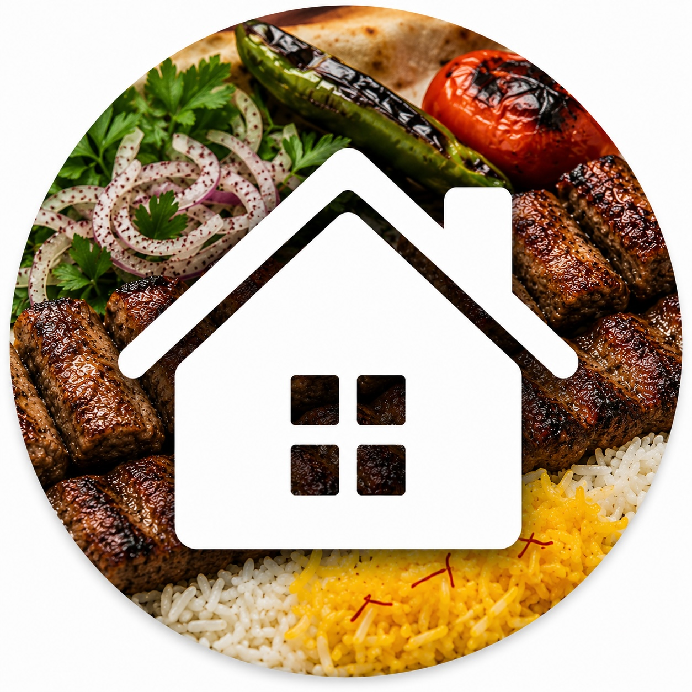
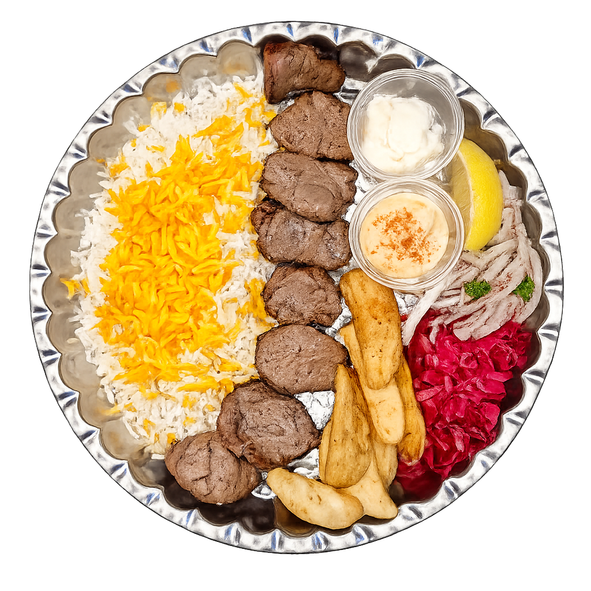
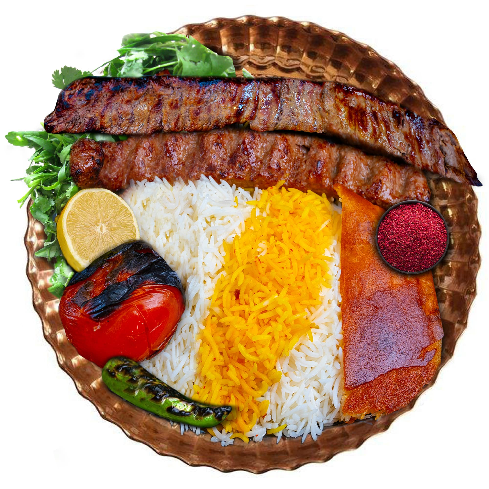
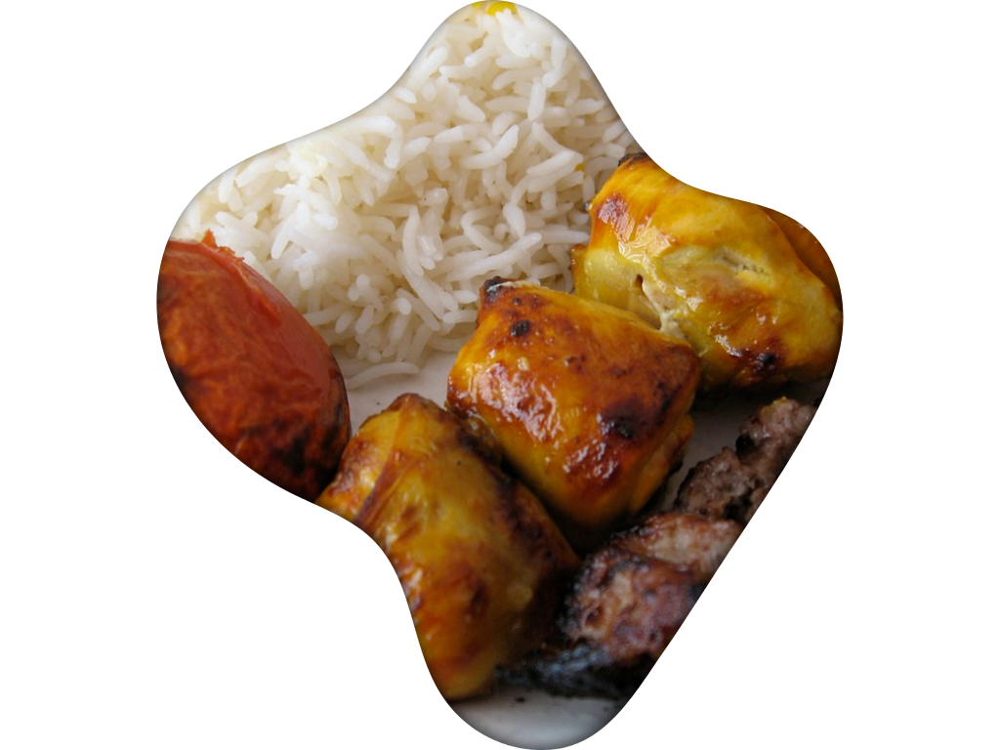

Odin Recipes (Iranian Kebab edition)Pages: Home |

Chenjeh Kebab Recipe |
Sultani KebabWelcome to the sizzling kingdom of Iranian kebabs — where smoke signals mean dinner is ready, saffron is treated like treasure, and one bite can instantly turn a “just a little snack” into a full family feast. From juicy koobideh that practically melts off the skewer to buttery barg kebabs that make your grill feel underqualified, we're here to celebrate the glorious art of Persian barbecue.
Warning: side effects may include uncontrollable hunger, arguing over who gets the last tomato, and suddenly calling everyone “jan” at the dinner table.
